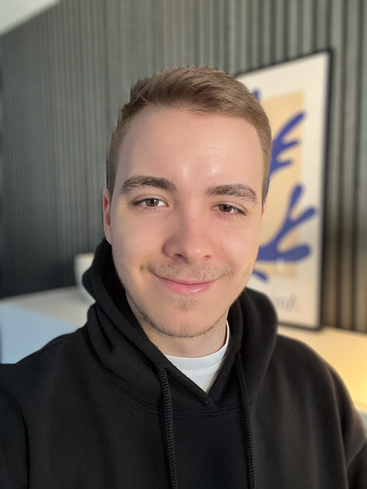

Fabian
Eichinger.
Video Content Creator mit Schwerpunkt auf Social Media, visuellen Konzepten und Storytelling. Klarer Content. Modernes Design. Visuelles Storytelling.

Schwerpunkte
Videoproduktion
High-End Editing & Produktion für Social Media Plattformen.
Reels & Ads
Kurzvideos, die scroll-stoppend wirken und Reichweite bringen.
Social-Media-Strategy
Konzepte und Strategien für organische Reichweite und Wachstum.
Visuelle Sprache
Reduziertes Design für maximale Klarheit und Wiedererkennbarkeit.
Über mich
Ich bin festangestellter Video Content Creator mit Schwerpunkt auf Social Media. Täglich arbeite ich an Inhalten, die authentisch wirken, verständlich sind und visuell überzeugen.
Ich arbeite konzentriert, detailverliebt und ruhig. Mir ist wichtig, dass Content ehrlich wirkt und nicht nach klassischer Werbung aussieht. Auf dieser Seite teile ich meine Erfahrungen und Einblicke.
Berufserfahrung
Content Creator / Grafiker
Seit März 2025 erstelle ich Content für Social Media Kanäle und kümmere mich um die visuelle Umsetzung von Marketing-Kampagnen.
- Videoproduktion für Instagram, LinkedIn & TikTok
- Grafikdesign für Social Media Postings & Kampagnen
- Content-Planung & Redaktionskalender erstellen
- Trend-Analyse & Content-Optimierung
- Visuelle Markenentwicklung mit Kunden
Ich verbinde kreatives Design mit strategischem Denken. Ziel ist es, Content zu produzieren, der nicht nur gut aussieht, sondern auch funktioniert.
Web- und Grafikdesigner
Lagermitarbeiter
Neben der Schule als Lageraushilfskraft: Einlagerung, Warenannahme & Prüfung.
Ausbildung
Ausbildung Mediengestalter Digital
Workshop: Gamedesign
5 tägiger Workshop über Gamedesign & Programmierung in Unity.
Neueste Insights & Artikel
Einblicke in meine Arbeit, Social Media Content Strategien und Video Editing Tipps.
Warum gutes Storytelling auf Social Media wichtiger ist als je zuvor
Reine Werbung reicht nicht mehr aus. Ein Einblick in ehrliches Content Marketing.
Lesen → Editing3 Video-Editing Trends für 2026, die du kennen musst
Wie schnelle Schnitte und visuelle Klarheit die Aufmerksamkeitsspanne dominieren.
Lesen → StrategieAuthentischer Markenaufbau durch Kurzvideos
Mach deine Brand greifbar – mit scroll-stoppendem Design und Fokus.
Lesen → StrategieDie 5 größten Fehler bei der Content-Planung
Warum unregelmäßiges Posten ohne System nicht wächst.
Lesen → EditingWie ich meinen Video Editing Workflow halbiert habe
Shortcuts, Pre-Sets und strukturierte Timelines.
Lesen →Häufige Fragen
Welche Art von Video Content produzierst du beruflich?
In meiner Festanstellung produziere ich kurzweiligen, ansprechenden Social Media Content wie Reels, TikToks und Video-Ads. Der Fokus liegt auf visuellem Storytelling, das Marken authentisch präsentiert und direkt die Zielgruppe anspricht.
Warum ist visuelles Storytelling im Marketing wichtig?
Reines werbliches "Schreien" funktioniert nicht mehr gut. Echtes Storytelling baut hingegen Vertrauen auf. Durch smarte, ehrliche Visualisierungen lässt sich eine Zielgruppe nachhaltig an eine Marke binden.
Worum geht es in deinem Blog?
Im Blog teile ich mein Wissen und meine Erfahrungen aus dem Berufsalltag als Content Creator. Von Video Editing Workflows über Content-Strategien bis hin zu aktuellen Social Media Trends – alles praxisnah und aus erster Hand.